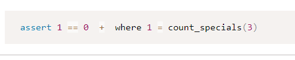

היי עשיתי 2 תרגילים והם עובדים תקין אך הבודק האוטומטי נותן לי אליהם שגיאה ואני לא ממש מבינה למה.
אשמח קצת לאזרה.
תודה מראש!
לא משנה איך אני משנה את זה, הבודק עדיין נותן לי שגיאה

היי עשיתי 2 תרגילים והם עובדים תקין אך הבודק האוטומטי נותן לי אליהם שגיאה ואני לא ממש מבינה למה.
אשמח קצת לאזרה.
תודה מראש!
לא משנה איך אני משנה את זה, הבודק עדיין נותן לי שגיאה
לגבי השגיאה השנייה -
הפונקציה של הספירת מלאי שלך מחזירה 10 במקום 9 למספר 22.
ואחרי שערכת -
עוד פעם שים לב שהפונקציה שלך מחזירה עבור ספירת מלאי של 0 - את המספר מינוס 1.
השגיאה בפונקציה שלך.
אבל היא מחזירה 9 ולא -1
תעשי כמה בדיקות לפונקציה שלך ידנית ותראי, כי הטעות כנראה אצלך
זה לא יכול להיות כי הפוקציה יוצרת סט של מספרים בריינג׳ של המספר ואז בודקת בלולאה אותם אם מתחלקים ב3 או 7 ללא שארית ומקדמת קאונתר.
בוודאות אין תעות שם.
מה הפונקציה שלך מחזירה אם את שולחת לה 0? ומה היא מחזירה אם את שולחת לה 22?
ל 22 אני מקבלת 9
ל0 אני מקבלת 0
זה די מוזר כי השגיאה אומרת שעבור 22 את מחזירה 10 ועבור 0 את מחזירה 1- 
התחלת את הספירה מ1 או מ0?
יופי אחרי שבירת ראש תיקנתי את הבעיה עם תרגיל 96.
ואכשב יש לי שגיאה עם תרגיל 97 ו95 הודעות דומות.
בכללי נירא לי שהקוד שלי עובד והוא מחזיר לי אלסקה.
הפונקציה אמורה לעבוד בלי לקבל אף פרמטר
אז איך היא תקבל את הקובץ?
לפתוך את הקובץ בתוך הפונקציה?
חחחח
טוב תודה לכולם.ן הכל נפטר, יצאתי סטומה מספר 1 >_>
אשמח להכוונה גם בהקשר של “ספירת מלאי”.
הפונקציה עובדת לי על כל המספרים ואני עדיין מקבל הודעת שגיאה… מה אני עושה לא בסדר ?
וכן התחלתי לספור מ-1…

כשאתה מריץ את זה במחברת שלך, כמה יוצא לך עבור 3? כמה אמור לצאת עבור 3? (רמז: שים לב ש1 זו לא תשובה נכונה)
כן. גם זה מופיע בשרשור אחר. כדי לא להתבלבל - זו באמת שגיאה לעומת דרישות התרגיל (ולא שגיאה אחרת שצצה בגלל הבדל מינורי בין הקובץ שלנו לקובץ של הבודק האוטומטי). התרגיל במקרה זה ביקש להחזיר ערך מסוים. תבדוק מה הפונקציה שלך מחזירה.
זה מחזיר לי alaska
אם יש לך את הקישור לפוסט אז אשמח לקבל כי לא מצאתי…
תנסה “שטוחלנדיה” בחיפוש.
מחזיר או מדפיס? כלומר, אם אתה עושה
var = func()
print(var)
מדפיס alaska ?
אם התשובה לשאלה הזו היא כן, אז תכניס שורה ריקה בסוף הקובץ שלך ותראה מה יוצא לך אז (למרות שאני לא מאמינה שזה זה, זה היה נותן ‘’ לא None )

{kind=link}
{kind=link}
{kind=link}
{kind=link}